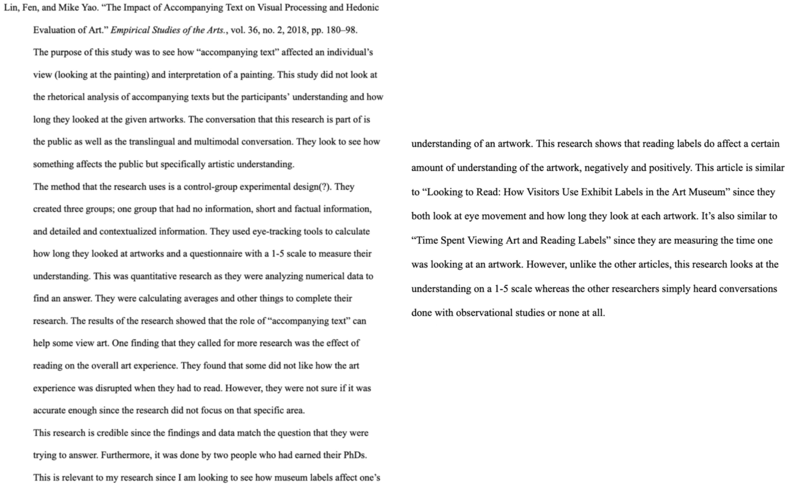

"Students will be able to evaluate and act on criteria for relevance, credibility,
and ethics when gathering, analyzing, and presenting primary and secondary source materials"

READING RESPONSE #3
2023
This assignment had us read a source to help us understand the different methods there are to
gather data and make sense of it. At this point, I had already chose the genre I was going to be researching,
so I took this opprtunity to explore the different ways I could potentially carry out my research. Through
this assignment I was able

ANNOTATED BIBLIOGRAPHY
2023
An annotated bibliography is where a source is read to identify the purpose, the findings, the methods,
and the credibility. Sources can be anything that may be useful to our own individiual research such as
magazines, books, videos, papers, and etc. This assignment was to help us gather different secondary
sources that we could potentionally use in our own research. At this point, we were gathering sources and
determining whether it was good or bad once we were done analyzing it. Through this artifact I was able to
find sources for my paper and start figuring out what my question/gap for my research would be. I was also able
to learn how to determine what sources were considered good or bad.